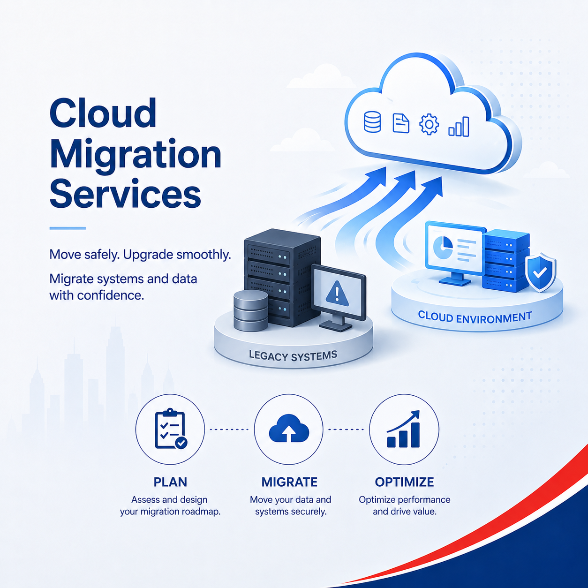

Current email platform
Google Workspace, Microsoft 365, cPanel, Zoho, IMAP, POP or mixed legacy mailboxes.
If you are searching for Google to 365 email migration, Gmail to Outlook, Outlook to Gmail or Microsoft 365 to Google Workspace, Axon helps move company email with proper planning, DNS and user support.

Google Workspace, Microsoft 365, cPanel, Zoho, IMAP, POP or mixed legacy mailboxes.
Users, aliases, groups, shared mailboxes, devices, Outlook profiles, Gmail access and mobile setup.
Email migration normally depends on clean DNS planning so mail flow and sender authentication work correctly.
Axon plans the switch, tests mail flow and helps users understand what changes after migration.
The risky part is usually DNS, user access, Outlook/Gmail setup, old devices and timing. Axon handles the practical details in plain English.